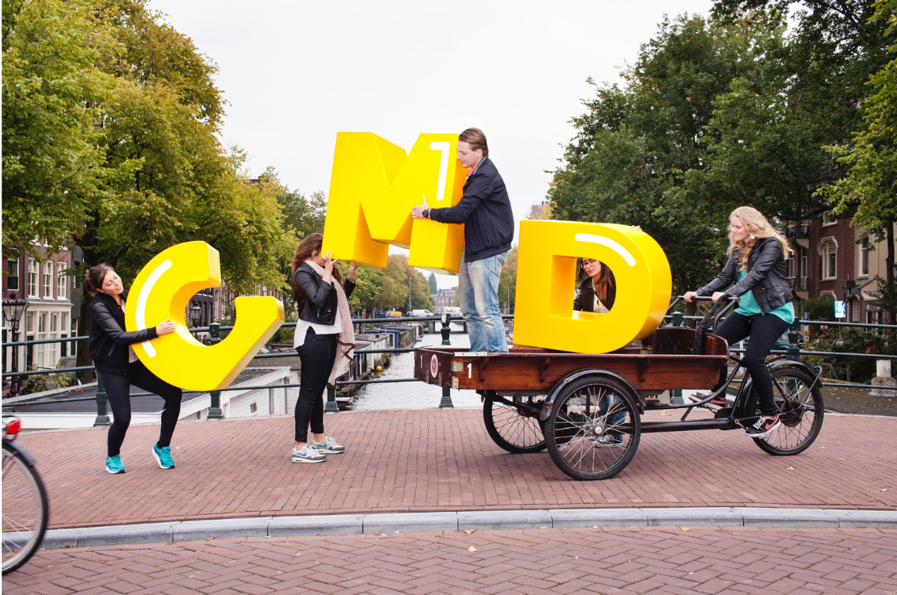

Hier mijn top projecten van dit jaar!

| Opleiding | Communication & Multimedia Design |
|---|---|
| Jaar | 2 |
| Datum | september 2023 - juli 2024 |
Voor het vak Front-end Development kreeg ik de opdracht om een bestaande website naar keuze volledig na te maken en te verbeteren op het gebied van toegankelijkheid, met speciale aandacht voor screenreaders. Ik heb ervoor gekozen om de website van Air Up na te maken. Dit bleek een uitdagende opdracht, vooral omdat ik coderen nog best lastig vind. Toch ben ik stap voor stap aan de slag gegaan en heb ik veel geleerd over HTML, CSS en het toepassen van semantische elementen om de site beter toegankelijk te maken.
Uiteindelijk is het me gelukt om de website niet alleen visueel na te maken, maar ook responsive te maken voor verschillende schermformaten. Daarnaast heb ik extra aandacht besteed aan toegankelijkheid door onder andere gebruik te maken van aria-labels en duidelijke structuur, zodat screenreaders de inhoud goed kunnen voorlezen. Ik ben trots op het eindresultaat! Bekijk hieronder de link naar mijn versie van de website:
ZIE WEBSITEVoor het vak Responsive Multi Device Design (RMDD) heb ik een app ontwikkeld die het tennisproces voor gebruikers ondersteunt vóór, tijdens en na een training of wedstrijd. Mijn concept, TennisTracker, helpt spelers bij het bijhouden van de puntentelling, hartslag en prestaties via een Apple Watch tijdens het tennissen. Vooraf kunnen gebruikers wedstrijden plannen en maatjes toevoegen via hun mobiel of laptop. Achteraf kunnen ze resultaten en statistieken terugzien en delen, wat helpt bij reflectie en verbetering van hun spel.
Tijdens dit project heb ik uitgebreid onderzoek gedaan naar vergelijkbare apps, wireframes en screenflows ontworpen voor zowel mobiel als smartwatch, en meerdere keren feedback verwerkt. De app bevat alle essentiële functies zoals score-registratie, conditieoverzicht, en sociale interactie met maatjes. Door middel van consistent en complementary design heb ik gezorgd dat de ervaring op verschillende apparaten goed op elkaar aansluit. Het was een leerzaam proces waarin ik stap voor stap mijn ontwerp- en UX-vaardigheden heb ontwikkeld.
ZIE RESULTAATVoor het vak Vormgeving kreeg ik de opdracht om een mobiele onepager te ontwerpen voor de actie Plog de dag!, een initiatief van Gemeente Rotterdam om zwerfafval op te ruimen tijdens het hardlopen of wandelen. Het doel was om mensen op een visueel aantrekkelijke en activerende manier te motiveren om mee te doen met ploggen.
Tijdens dit project moest ik werken binnen een bestaande huisstijl en met vooraf aangeleverde afbeeldingen. Dit betekende dat ik gericht moest ontwerpen met duidelijke kaders qua kleurgebruik, typografie en beeldtaal. De focus lag op een logische, responsive opbouw, heldere call-to-actions, en een goede balans tussen informatief en inspirerend. Het resultaat is een toegankelijke en wervende mobiele webpagina die mensen actief betrekt bij een schonere stad.
ZIE RESULTAATWil je meer van mij zien? Klik hieronder om meer projecten te bekijken!
BEKIJK MEER PROJECTEN{kind=link}